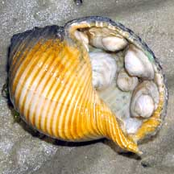
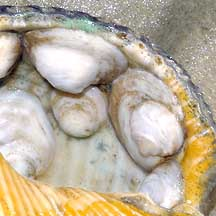
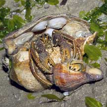
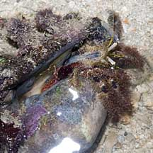
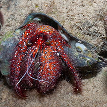
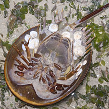

|
|
| shelled snails text index | photo index |
| Phylum Mollusca > Class Gastropoda > Family Calyptraeidae |
| Flat
slipper snail Siphopatella walshi Family Calyptraeidae updated Jul 2020 Where seen? This snail is commonly encountered inside a shell occupied by a hermit crab. It is also sometimes found on the underside of horseshoe crabs. It was previously known as Crepidula walshi. Features: 1-3.5cm. Shell thin, conical or flat, usually white. It is usually found in pairs. The larger one is usually the female and the smaller one male. When the smaller one grows big enough, it will change into a female! Sometimes confused with limpets which are also gastropods but which can move about. Here's more on how to tell apart limpets, slipper snails and similar animals. |
 Chek Jawa, Mar 05 |
 The smaller shell is usually the male. |
 Changi, Apr 05 |
|
 Sisters Island, Jan 11 |
 Tanah Merah, Sep 13 |
 Changi, Jul 04 |
| Flat slipper snails on Singapore shores |
On wildsingapore
flickr
|
| Other sightings on Singapore shores |
|
References
|